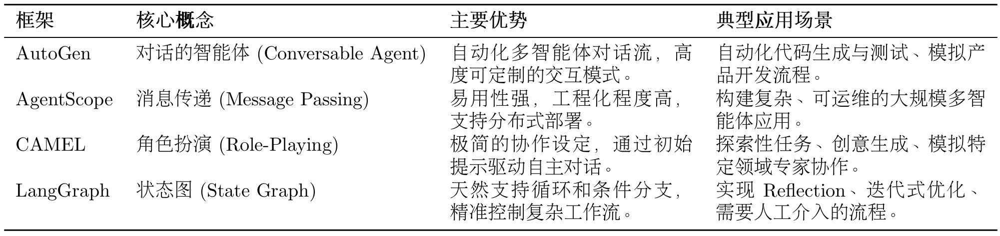
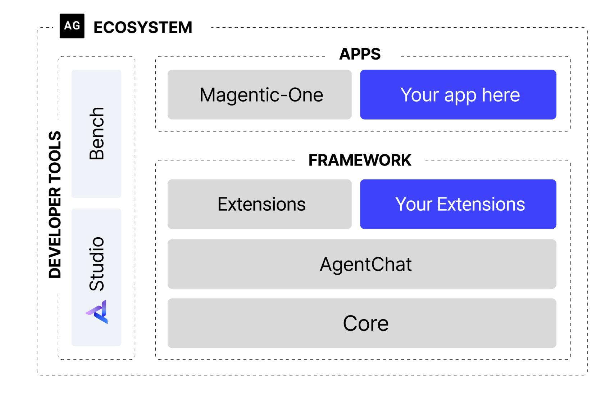
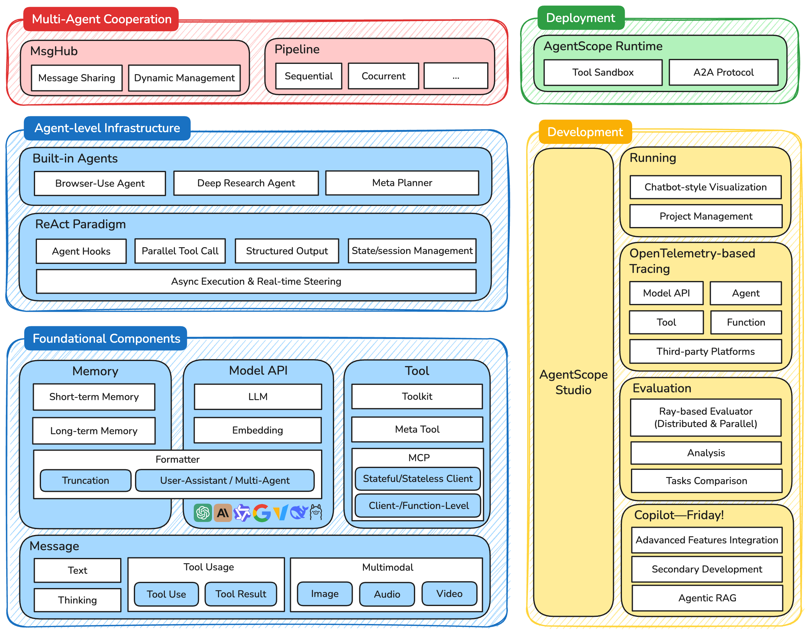
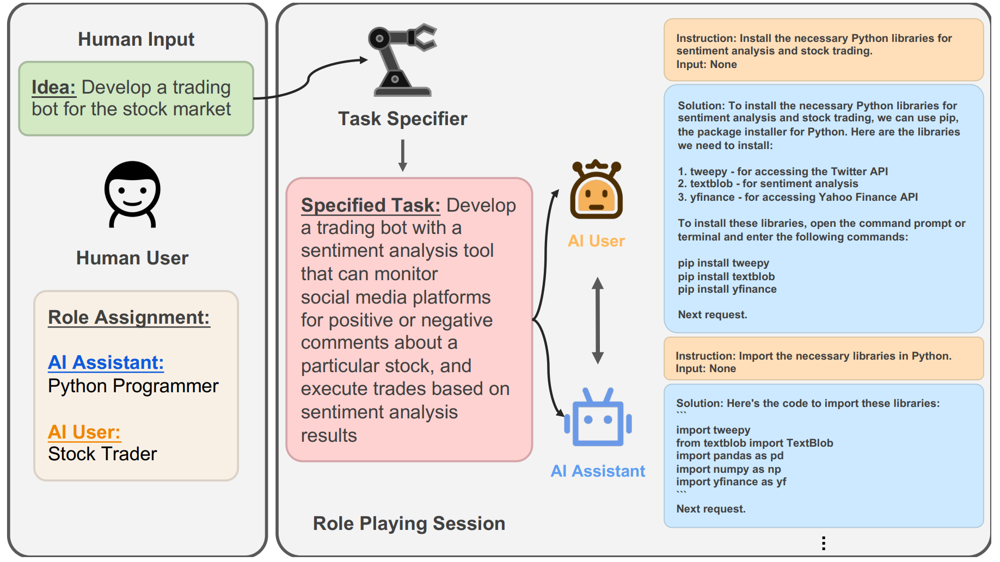

第六章 框架开发实践¶
在第四章中，我们通过编写原生代码，实现了 ReAct、Plan-and-Solve 和 Reflection 这几种智能体的核心工作流。这个过程让我们对智能体的内在执行逻辑有了理解。随后，在第五章，我们切换到“使用者”的视角，体验了低代码平台带来的便捷与高效。
本章的目标，就是探讨如何利用业界主流的一些智能体框架，来高效、规范地构建可靠的智能体应用。我们将首先概览当前市面上主流的智能体框架，然后并对几个具有代表性的框架，通过一个完整的实战案例，来体验框架驱动的开发模式。
6.1 从手动实现到框架开发¶
从编写一次性的脚本到使用一个成熟的框架，是软件工程领域一次重要的思维跃迁。我们在第四章中编写的代码，其主要目的是为了教学和理解。它们能很好地完成特定任务，但如果要用它们来构建多个、不同类型且逻辑复杂的智能体应用，很快就会遇到瓶颈。
一个框架的本质，是提供一套经过验证的“规范”。它将所有智能体共有的、重复性的工作（如主循环、状态管理、工具调用、日志记录等）进行抽象和封装，让我们在构建新的智能体时，能够专注于其独特的业务逻辑，而非通用的底层实现。
6.1.1 为何需要智能体框架¶
在我们开始实战之前，首先需要明确为什么要使用框架。相比于直接编写独立的智能体脚本，使用框架的价值主要体现在以下几个方面：
- 提升代码复用与开发效率：这是最直接的价值。一个好的框架会提供一个通用的
Agent基类或执行器，它封装了智能体运行的核心循环（Agent Loop）。无论是 ReAct 还是 Plan-and-Solve，都可以基于框架提供的标准组件快速搭建，从而避免重复劳动。 - 实现核心组件的解耦与可扩展性：一个健壮的智能体系统应该由多个松散耦合的模块组成。框架的设计会强制我们分离不同的关注点：
- 模型层 (Model Layer)：负责与大语言模型交互，可以轻松替换不同的模型（OpenAI, Anthropic, 本地模型）。
- 工具层 (Tool Layer)：提供标准化的工具定义、注册和执行接口，添加新工具不会影响其他代码。
- 记忆层 (Memory Layer)：处理短期和长期记忆，可以根据需求切换不同的记忆策略（如滑动窗口、摘要记忆）。 这种模块化的设计使得整个系统极具可扩展性，更换或升级任何一个组件都变得简单。
- 标准化复杂的状态管理：我们在
ReflectionAgent中实现的Memory类只是一个简单的开始。在真实的、长时运行的智能体应用中，状态管理是一个巨大的挑战，它需要处理上下文窗口限制、历史信息持久化、多轮对话状态跟踪等问题。一个框架可以提供一套强大而通用的状态管理机制，开发者无需每次都重新处理这些复杂问题。 - 简化可观测性与调试过程：当智能体的行为变得复杂时，理解其决策过程变得至关重要。一个精心设计的框架可以内置强大的可观测性能力。例如，通过引入事件回调机制（Callbacks），我们可以在智能体生命周期的关键节点（如
on_llm_start,on_tool_end,on_agent_finish）自动触发日志记录或数据上报，从而轻松地追踪和调试智能体的完整运行轨迹。这远比在代码中手动添加print语句要高效和系统化。
因此，从手动实现走向框架开发，不仅是代码组织方式的改变，更是构建复杂、可靠、可维护的智能体应用的必由之路。
6.1.2 主流框架的选型与对比¶
智能体框架的生态正在以前所未有的速度发展。如果说 LangChain 和 LlamaIndex 定义了第一代通用 LLM 应用框架的范式，那么新一代的框架则更加专注于解决特定领域的深层挑战，尤其是多智能体协作 (Multi-Agent Collaboration) 和 复杂工作流控制 (Complex Workflow Control)。
在本章的后续实战中，我们将聚焦于四个在这些前沿领域极具代表性的框架：AutoGen、AgentScope、CAMEL 和 LangGraph。它们的设计理念各不相同，分别代表了实现复杂智能体系统的不同技术路径，如表6.1所示。
表 6.1 四种智能体框架对比

- AutoGen：AutoGen 的核心思想是通过对话实现协作[1]。它将多智能体系统抽象为一个由多个“可对话”智能体组成的群聊。开发者可以定义不同角色（如
Coder,ProductManager,Tester），并设定它们之间的交互规则（例如，Coder写完代码后由Tester自动接管）。任务的解决过程，就是这些智能体在群聊中通过自动化消息传递，不断对话、协作、迭代直至最终目标达成的过程。 - AgentScope：AgentScope 是一个专为多智能体应用设计的、功能全面的开发平台[2]。它的核心特点是易用性和工程化。它提供了一套非常友好的编程接口，让开发者可以轻松定义智能体、构建通信网络，并管理整个应用的生命周期。其内置的消息传递机制和对分布式部署的支持，使其非常适合构建和运维复杂、大规模的多智能体系统。
- CAMEL：CAMEL 提供了一种新颖的、名为角色扮演 (Role-Playing) 的协作方法[3]。其核心理念是，我们只需要为两个智能体（例如，
AI研究员和Python程序员）设定好各自的角色和共同的任务目标，它们就能在“初始提示 (Inception Prompting)”的引导下，自主地进行多轮对话，相互启发、相互配合，共同完成任务。它极大地降低了设计多智能体对话流程的复杂度。 - LangGraph：作为 LangChain 生态的扩展，LangGraph 另辟蹊径，将智能体的执行流程建模为图 (Graph)[4]。在传统的链式结构中，信息只能单向流动。而 LangGraph 将每一步操作（如调用LLM、执行工具）定义为图中的一个节点 (Node)，并用边 (Edge) 来定义节点之间的跳转逻辑。这种设计天然支持循环 (Cycles)，使得实现如 Reflection 这样的迭代、修正、自我反思的复杂工作流变得异常简单和直观。
在接下来的小节中，我们将对这四个框架，分别通过一个完整的实战案例，来深入体验框架驱动的开发模式。请注意，所有演示的项目源文件会放在code文件夹下，正文内只讲解原理部分。
6.2 框架一：AutoGen¶
正如前文所述，AutoGen 的设计哲学根植于"以对话驱动协作"。它巧妙地将复杂的任务解决流程，映射为不同角色的智能体之间的一系列自动化对话。基于这一核心理念，AutoGen 框架持续演进。我们将以 0.7.4 版本为例，因为它是截止目前为止最新版本，代表了一次重要的架构重构，从类继承设计转向了更灵活的组合式架构。为了深入理解并应用这一框架，我们首先需要讲解其最核心的构成要素与底层的对话交互机制。
6.2.1 AutoGen 的核心机制¶
0.7.4 版本的发布是 AutoGen 发展的一个重要节点，它标志着框架在底层设计上的一次根本性革新。这次更新并非简单的功能叠加，而是对整体架构的重新思考，旨在提升框架的模块化、并发性能和开发者体验。

图 6.1 AutoGen架构图
（1）框架结构的演进
如图6.1所示，新架构最显著的变化是引入了清晰的分层和异步优先的设计理念。
- 分层设计： 框架被拆分为两个核心模块：
autogen-core：作为框架的底层基础，封装了与语言模型交互、消息传递等核心功能。它的存在保证了框架的稳定性和未来扩展性。autogen-agentchat：构建于core之上，提供了用于开发对话式智能体应用的高级接口，简化了多智能体应用的开发流程。 这种分层策略使得各组件职责明确，降低了系统的耦合度。- 异步优先： 新架构全面转向异步编程 (
async/await)。在多智能体协作场景中，网络请求（如调用 LLM API）是主要耗时操作。异步模式允许系统在等待一个智能体响应时处理其他任务，从而避免了线程阻塞，显著提升了并发处理能力和系统资源的利用效率。
（2）核心智能体组件
智能体是执行任务的基本单元。在 0.7.4 版本中，智能体的设计更加专注和模块化。
- AssistantAgent (助理智能体)： 这是任务的主要解决者，其核心是封装了一个大型语言模型（LLM）。它的职责是根据对话历史生成富有逻辑和知识的回复，例如提出计划、撰写文章或编写代码。通过不同的系统消息（System Message），我们可以为其赋予不同的“专家”角色。
- UserProxyAgent (用户代理智能体)： 这是 AutoGen 中功能独特的组件。它扮演着双重角色：既是人类用户的“代言人”，负责发起任务和传达意图；又是一个可靠的“执行器”，可以配置为执行代码或调用工具，并将结果反馈给其他智能体。这种设计清晰地区分了“思考”（由
AssistantAgent完成）与“行动”。
（3）从 GroupChatManager 到 Team
当任务需要多个智能体协作时，就需要一个机制来协调对话流程。在早期版本中，GroupChatManager 承担了这一职责。而在新架构中，引入了更灵活的 Team 或群聊概念，例如 RoundRobinGroupChat。
- 轮询群聊 (RoundRobinGroupChat)： 这是一种明确的、顺序化的对话协调机制。它会让参与的智能体按照预定义的顺序依次发言。这种模式非常适用于流程固定的任务，例如一个典型的软件开发流程：产品经理先提出需求，然后工程师编写代码，最后由代码审查员进行检查。
- 工作流：
- 首先，创建一个
RoundRobinGroupChat实例，并将所有参与协作的智能体（如产品经理、工程师等）加入其中。 - 当一个任务开始时，群聊会按照预设的顺序，依次激活相应的智能体。
- 被选中的智能体根据当前的对话上下文进行响应。
- 群聊将新的回复加入对话历史，并激活下一个智能体。
- 这个过程会持续进行，直到达到最大对话轮次或满足预设的终止条件。
通过这种方式，AutoGen 将复杂的协作关系，简化为一个流程清晰、易于管理的自动化“圆桌会议”。开发者只需定义好每个团队成员的角色和发言顺序，剩下的协作流程便可由群聊机制自主驱动。
在下一节中，我们将通过构建一个模拟软件开发团队的实例，来亲身体验如何在新架构下定义不同角色的智能体，并将它们组织在一个由 RoundRobinGroupChat 协调的群聊中，以协作完成一个真实的编程任务。
6.2.2 软件开发团队¶
在理解了 AutoGen 的核心组件与对话机制后，本节将通过一个完整的实战案例来具体展示如何应用这些新特性。我们将构建一个模拟的软件开发团队，该团队由多个具有不同专业技能的智能体组成，它们将协作完成一个真实的软件开发任务。
（1）业务目标
我们的目标是开发一个功能明确的 Web 应用：实时显示比特币当前价格。这个任务虽小，却完整地覆盖了软件开发的典型环节：从需求分析、技术选型、编码实现到代码审查和最终测试。这使其成为检验 AutoGen 自动化协作流程的理想场景。
（2）智能体团队角色
为了模拟真实的软件开发流程，我们设计了四个职责分明的智能体角色：
- ProductManager (产品经理): 负责将用户的模糊需求转化为清晰、可执行的开发计划。
- Engineer (工程师): 依据开发计划，负责编写具体的应用程序代码。
- CodeReviewer (代码审查员): 负责审查工程师提交的代码，确保其质量、可读性和健壮性。
- UserProxy (用户代理): 代表最终用户，发起初始任务，并负责执行和验证最终交付的代码。
这种角色划分是多智能体系统设计中的关键一步，它将一个复杂任务分解为多个由领域“专家”处理的子任务。
6.2.3 核心代码实现¶
下面，我们将分步解析这个自动化团队的核心代码。
（1）模型客户端配置
所有基于 LLM 的智能体都需要一个模型客户端来与语言模型进行交互。AutoGen 0.7.4 提供了标准化的 OpenAIChatCompletionClient，它可以方便地与任何兼容 OpenAI API 规范的模型服务（包括 OpenAI 官方服务、Azure OpenAI 以及本地模型服务如 Ollama等）进行对接。
我们通过一个独立的函数来创建和配置模型客户端，并通过环境变量管理 API Key 和服务地址，这是一种良好的工程实践，增强了代码的灵活性和安全性。
from autogen_ext.models.openai import OpenAIChatCompletionClient
def create_openai_model_client():
"""创建并配置 OpenAI 模型客户端"""
return OpenAIChatCompletionClient(
model=os.getenv("LLM_MODEL_ID", "gpt-4o"),
api_key=os.getenv("LLM_API_KEY"),
base_url=os.getenv("LLM_BASE_URL", "https://api.openai.com/v1")
)
（2）智能体角色的定义
定义智能体的核心在于编写高质量的系统消息 (System Message)。系统消息就像是给智能体设定的“行为准则”和“专业知识库”，它精确地规定了智能体的角色、职责、工作流程，甚至是与其他智能体交互的方式。一个精心设计的系统消息是确保多智能体系统能够高效、准确协作的关键。在我们的软件开发团队中，我们为每一个角色都创建了一个独立的函数来封装其定义。
产品经理 (ProductManager)
产品经理负责启动整个流程。它的系统消息不仅定义了其职责，还规范了其输出的结构，并包含了引导对话转向下一环节（工程师）的明确指令。
def create_product_manager(model_client):
"""创建产品经理智能体"""
system_message = """你是一位经验丰富的产品经理，专门负责软件产品的需求分析和项目规划。
你的核心职责包括：
1. **需求分析**：深入理解用户需求，识别核心功能和边界条件
2. **技术规划**：基于需求制定清晰的技术实现路径
3. **风险评估**：识别潜在的技术风险和用户体验问题
4. **协调沟通**：与工程师和其他团队成员进行有效沟通
当接到开发任务时，请按以下结构进行分析：
1. 需求理解与分析
2. 功能模块划分
3. 技术选型建议
4. 实现优先级排序
5. 验收标准定义
请简洁明了地回应，并在分析完成后说"请工程师开始实现"。"""
return AssistantAgent(
name="ProductManager",
model_client=model_client,
system_message=system_message,
)
工程师 (Engineer)
工程师的系统消息聚焦于技术实现。它列举了工程师的技术专长，并规定了其在接收到任务后的具体行动步骤，同样也包含了引导流程转向代码审查员的指令。
def create_engineer(model_client):
"""创建软件工程师智能体"""
system_message = """你是一位资深的软件工程师，擅长 Python 开发和 Web 应用构建。
你的技术专长包括：
1. **Python 编程**：熟练掌握 Python 语法和最佳实践
2. **Web 开发**：精通 Streamlit、Flask、Django 等框架
3. **API 集成**：有丰富的第三方 API 集成经验
4. **错误处理**：注重代码的健壮性和异常处理
当收到开发任务时，请：
1. 仔细分析技术需求
2. 选择合适的技术方案
3. 编写完整的代码实现
4. 添加必要的注释和说明
5. 考虑边界情况和异常处理
请提供完整的可运行代码，并在完成后说"请代码审查员检查"。"""
return AssistantAgent(
name="Engineer",
model_client=model_client,
system_message=system_message,
)
代码审查员 (CodeReviewer)
代码审查员的定义则侧重于代码的质量、安全性和规范性。它的系统消息详细列出了审查的重点和流程，确保了代码交付前的质量关卡。
def create_code_reviewer(model_client):
"""创建代码审查员智能体"""
system_message = """你是一位经验丰富的代码审查专家，专注于代码质量和最佳实践。
你的审查重点包括：
1. **代码质量**：检查代码的可读性、可维护性和性能
2. **安全性**：识别潜在的安全漏洞和风险点
3. **最佳实践**：确保代码遵循行业标准和最佳实践
4. **错误处理**：验证异常处理的完整性和合理性
审查流程：
1. 仔细阅读和理解代码逻辑
2. 检查代码规范和最佳实践
3. 识别潜在问题和改进点
4. 提供具体的修改建议
5. 评估代码的整体质量
请提供具体的审查意见，完成后说"代码审查完成，请用户代理测试"。"""
return AssistantAgent(
name="CodeReviewer",
model_client=model_client,
system_message=system_message,
)
用户代理 (UserProxy)
UserProxyAgent 是一个特殊的智能体，它不依赖 LLM 进行回复，而是作为用户在系统中的代理。它的 description 字段清晰地描述了其职责，尤其重要的是，它负责在任务最终完成后发出 TERMINATE 指令，以正常结束整个协作流程。
def create_user_proxy():
"""创建用户代理智能体"""
return UserProxyAgent(
name="UserProxy",
description="""用户代理，负责以下职责：
1. 代表用户提出开发需求
2. 执行最终的代码实现
3. 验证功能是否符合预期
4. 提供用户反馈和建议
完成测试后请回复 TERMINATE。""",
)
通过这四个独立的定义函数，我们不仅构建了一支功能完备的“虚拟团队”，也展示了通过系统消息进行“提示工程” ，是设计高效多智能体应用的核心环节。
（3）定义团队协作流程
在本案例中，软件开发的流程是相对固定的（需求->编码->审查->测试），因此 RoundRobinGroupChat (轮询群聊) 是理想的选择。我们按照业务逻辑顺序，将四个智能体加入到参与者列表中。
from autogen_agentchat.teams import RoundRobinGroupChat
from autogen_agentchat.conditions import TextMentionTermination
# 定义团队聊天和协作规则
team_chat = RoundRobinGroupChat(
participants=[
product_manager,
engineer,
code_reviewer,
user_proxy
],
termination_condition=TextMentionTermination("TERMINATE"),
max_turns=20,
)
- 参与者顺序:
participants列表的顺序决定了智能体发言的先后次序。 - 终止条件:
termination_condition是控制协作流程何时结束的关键。这里我们设定，当任何消息中包含关键词 "TERMINATE" 时，对话便结束。在我们的设计中，这个指令由UserProxy在完成最终测试后发出。 - 最大轮次:
max_turns是一个安全阀，用于防止对话陷入无限循环，避免不必要的资源消耗。
（4）启动与运行
由于 AutoGen 0.7.4 采用异步架构，整个协作流程的启动和运行都在一个异步函数中完成，并最终通过 asyncio.run() 来执行。
async def run_software_development_team():
# ... 初始化客户端和智能体 ...
# 定义任务描述
task = """我们需要开发一个比特币价格显示应用，具体要求如下：
核心功能：
- 实时显示比特币当前价格（USD）
- 显示24小时价格变化趋势（涨跌幅和涨跌额）
- 提供价格刷新功能
技术要求：
- 使用 Streamlit 框架创建 Web 应用
- 界面简洁美观，用户友好
- 添加适当的错误处理和加载状态
请团队协作完成这个任务，从需求分析到最终实现。"""
# 异步执行团队协作，并流式输出对话过程
result = await Console(team_chat.run_stream(task=task))
return result
# 主程序入口
if __name__ == "__main__":
result = asyncio.run(run_software_development_team())
当程序运行时，task 作为初始消息被传入 team_chat，产品经理作为第一个参与者接收到该消息，随后整个自动化协作流程便开始了。
（5）预期协作效果
当我们运行这个软件开发团队时，可以观察到一个完整的协作流程：
🔧 正在初始化模型客户端...
👥 正在创建智能体团队...
🚀 启动 AutoGen 软件开发团队协作...
============================================================
---------- TextMessage (user) ----------
我们需要开发一个比特币价格显示应用，具体要求如下：
...
请团队协作完成这个任务，从需求分析到最终实现。
---------- TextMessage (ProductManager) ----------
### 1. 需求理解与分析
...
请工程师开始实现。
---------- TextMessage (Engineer) ----------
### 技术方案实施
...
请代码审查员检查。
---------- TextMessage (CodeReviewer) ----------
### 代码审查
...
代码审查完成，请用户代理测试。
---------- TextMessage (UserProxy) ----------
已经完成需求
---------- TextMessage (ProductManager) ----------
太好了，感谢您的反馈！如果在使用过程中有任何问题，或者有其他功能需求和改进建议，请随时告知我们。我们会持续提供支持和改进。期待您对我们的应用
有愉快的使用体验！
---------- TextMessage (Engineer) ----------
很高兴听到项目顺利完成。如果您或用户有任何问题或者需要帮助，请随时联系我们。感谢您对我们工作的支持，让我们一起确保应用稳定运行并不断优化用户
体验！
---------- TextMessage (CodeReviewer) ----------
非常感谢大家的努力与协作，使得项目能够顺利完成。未来若有更多技术支持的需求或者需要改进的地方，我们愿意为项目的持续优化贡
献力量。期待用户能够享受到流畅的体验，同时也欢迎提出更多的反馈与建议。再次感谢团队的合作！
---------- TextMessage (UserProxy) ----------
Enter your response: TERMINATE
============================================================
✅ 团队协作完成！
📋 协作结果摘要：
- 参与智能体数量：4个
- 任务完成状态：成功
整个协作过程展现了 AutoGen 框架的优势：自然的对话驱动协作、角色专业化分工、流程自动化管理和完整的开发闭环。
6.2.4 AutoGen 的优势与局限性分析¶
任何技术框架都有其特定的适用场景和设计权衡。在本节中，我们将客观地分析 AutoGen 的核心优势及其在实际应用中可能面临的局限性与挑战。
（1）优势
- 如案例所示，我们无需为智能体团队设计复杂的状态机或控制流逻辑，而是将一个完整的软件开发流程，自然地映射为产品经理、工程师和审查员之间的对话。这种方式更贴近人类团队的协作模式，显著降低了为复杂任务建模的门槛。开发者可以将更多精力聚焦于定义“谁（角色）”以及“做什么（职责）”，而非“如何做（流程控制）”。
- 框架允许通过系统消息（System Message）为每个智能体赋予高度专业化的角色。在案例中，
ProductManager专注于需求，而CodeReviewer则专注于质量。一个精心设计的智能体可以在不同项目中被复用，易于维护和扩展。 - 对于流程化任务，
RoundRobinGroupChat这样机制提供了清晰、可预测的协作流程。同时，UserProxyAgent的设计为“人类在环”（Human-in-the-loop）提供了天然的接口。它既可以作为任务的发起者，也可以是流程的监督者和最终的验收者。这种设计确保了自动化系统始终处于人类的监督之下。
（2）局限性
- 虽然
RoundRobinGroupChat提供了顺序化的流程，但基于 LLM 的对话本质上具有不确定性。智能体可能会产生偏离预期的回复，导致对话走向意外的分支，甚至陷入循环。 - 当智能体团队的工作结果未达预期时，调试过程可能非常棘手。与传统程序不同，我们得到的不是清晰的错误堆栈，而是一长串的对话历史。这被称为“对话式调试”的难题。
（3）非 OpenAI 模型的配置补充
如果你想使用非 OpenAI 系列的模型（如 DeepSeek、通义千问等），在 0.7.4 版本中需要在 OpenAIChatCompletionClient 的参数中传入模型信息字典。以 DeepSeek 为例：
from autogen_ext.models.openai import OpenAIChatCompletionClient
model_client = OpenAIChatCompletionClient(
model="deepseek-chat",
api_key=os.getenv("DEEPSEEK_API_KEY"),
base_url="https://api.deepseek.com/v1",
model_info={
"function_calling": True,
"max_tokens": 4096,
"context_length": 32768,
"vision": False,
"json_output": True,
"family": "deepseek",
"structured_output": True,
}
)
这个 model_info 字典帮助 AutoGen 了解模型的能力边界，从而更好地适配不同的模型服务。
6.3 框架二：AgentScope¶
如果说 AutoGen 的设计哲学是"以对话驱动协作"，那么 AgentScope 则代表了另一种技术路径：工程化优先的多智能体平台。AgentScope 由阿里巴巴达摩院开发，专门为构建大规模、高可靠性的多智能体应用而设计。它不仅提供了直观易用的编程接口，更重要的是内置了分布式部署、容错恢复、可观测性等企业级特性，使其特别适合构建需要长期稳定运行的生产环境应用。
6.3.1 AgentScope 的设计¶
与 AutoGen 相比，AgentScope 的核心差异在于其消息驱动的架构设计和工业级的工程实践。如果说 AutoGen 更像是一个灵活的"对话工作室"，那么 AgentScope 就是一个完整的"智能体操作系统"，为开发者提供了从开发、测试到部署的全生命周期支持。与许多框架采用的继承式设计不同，AgentScope 选择了组合式架构和消息驱动模式。这种设计不仅增强了系统的模块化程度，也为其出色的并发性能和分布式能力奠定了基础。
（1）分层架构体系
如图6.2所示，AgentScope 采用了清晰的分层模块化设计，从底层的基础组件到上层的应用编排，形成了一个完整的智能体开发生态。

图 6.2 AgentScope架构图
在这个架构中，最底层是基础组件层 (Foundational Components)，它为整个框架提供了核心的构建块。Message 组件定义了统一的消息格式，支持从简单的文本交互到复杂的多模态内容；Memory 组件提供了短期和长期记忆管理；Model API 层抽象了对不同大语言模型的调用；而 Tool 组件则封装了智能体与外部世界交互的能力。
在基础组件之上，智能体基础设施层 (Agent-level Infrastructure) 提供了更高级的抽象。这一层不仅包含了各种预构建的智能体（如浏览器使用智能体、深度研究智能体），还实现了经典的 ReAct 范式，支持智能体钩子、并行工具调用、状态管理等高级特性。特别值得注意的是，这一层原生支持异步执行与实时控制，这是 AgentScope 相比其他框架的一个重要优势。
多智能体协作层 (Multi-Agent Cooperation) 是 AgentScope 的核心创新所在。MsgHub 作为消息中心，负责智能体间的消息路由和状态管理；而 Pipeline 系统则提供了灵活的工作流编排能力，支持顺序、并发等多种执行模式。这种设计使得开发者可以轻松构建复杂的多智能体协作场景。
最上层的开发与部署层 (Deployment & Development)则体现了 AgentScope 对工程化的重视。AgentScope Runtime 提供了生产级的运行时环境，而 AgentScope Studio 则为开发者提供了完整的可视化开发工具链。
（2）消息驱动
AgentScope 的核心创新在于其消息驱动架构。在这个架构中，所有的智能体交互都被抽象为消息的发送和接收，而不是传统的函数调用。
from agentscope.message import Msg
# 消息的标准结构
message = Msg(
name="Alice", # 发送者名称
content="Hello, Bob!", # 消息内容
role="user", # 角色类型
metadata={ # 元数据信息
"timestamp": "2024-01-15T10:30:00Z",
"message_type": "text",
"priority": "normal"
}
)
将消息作为交互的基础单元，带来了几个关键优势：
- 异步解耦: 消息的发送方和接收方在时间上解耦，无需相互等待，天然支持高并发场景。
- 位置透明: 智能体无需关心另一个智能体是在本地进程还是在远程服务器上，消息系统会自动处理路由。
- 可观测性: 每一条消息都可以被记录、追踪和分析，极大地简化了复杂系统的调试与监控。
- 可靠性: 消息可以被持久化存储和重试，即使系统出现故障，也能保证交互的最终一致性，提升了系统的容错能力。
（3）智能体生命周期管理
在 AgentScope 中，每个智能体都有明确的生命周期（初始化、运行、暂停、销毁等），并基于一个统一的基类 AgentBase 来实现。开发者通常只需要关注其核心的 reply 方法。
from agentscope.agents import AgentBase
class CustomAgent(AgentBase):
def __init__(self, name: str, **kwargs):
super().__init__(name=name, **kwargs)
# 智能体初始化逻辑
def reply(self, x: Msg) -> Msg:
# 智能体的核心响应逻辑
response = self.model(x.content)
return Msg(name=self.name, content=response, role="assistant")
def observe(self, x: Msg) -> None:
# 智能体的观察逻辑（可选）
self.memory.add(x)
这种设计模式分离了智能体的内部逻辑与外部通信，开发者只需在 reply 方法中定义智能体“思考和回应”的方式即可。
（4）消息传递机制
AgentScope 内置了一个消息中心 (MsgHub)，它是整个消息驱动架构的中枢。MsgHub 不仅负责消息的路由和分发，还集成了持久化和分布式通信等高级功能，它有以下这些特点。
- 灵活的消息路由: 支持点对点、广播、组播等多种通信模式，可以构建灵活复杂的交互网络。
- 消息持久化: 能够将所有消息自动保存到数据库（如 SQLite, MongoDB），确保了长期运行任务的状态可以被恢复。
- 原生分布式支持: 这是 AgentScope 的标志性特性。智能体可以被部署在不同的进程或服务器上，
MsgHub会通过 RPC（远程过程调用）自动处理跨节点的通信，对开发者完全透明。
这些由底层架构提供的工程化能力，使得 AgentScope 在处理需要高并发、高可靠性的复杂应用场景时，比传统的对话驱动框架更具优势。当然，这也要求开发者理解并适应消息驱动的异步编程范式。
在下一节中，我们将通过一个具体的实战案例，三国狼人杀游戏，来深入体验 AgentScope 框架的能力，特别是其在处理并发交互方面的优势。
6.3.2 三国狼人杀游戏¶
为了深入理解 AgentScope 的消息驱动架构和多智能体协作能力，我们将构建一个融合了中国古典文化元素的"三国狼人杀"游戏。这个案例不仅展示了 AgentScope 在处理复杂多智能体交互方面的优势，更重要的是，它演示了如何在一个需要实时协作、角色扮演和策略博弈的场景中，充分发挥消息驱动架构的威力。与传统狼人杀不同，我们的"三国狼人杀"将刘备、关羽、诸葛亮等经典角色引入游戏，每个智能体不仅要完成狼人杀的基本任务（如狼人击杀、预言家查验、村民推理），还要体现出对应三国人物的性格特点和行为模式。这种设计让我们能够观察到 AgentScope 在处理多层次角色建模方面的表现。
（1）架构设计与核心组件
本案例的系统设计遵循了分层解耦的原则，将游戏逻辑划分为三个独立的层次，每个层次都映射了 AgentScope 的一个或多个核心组件：
- 游戏控制层 (Game Control Layer)：由一个
ThreeKingdomsWerewolfGame类作为游戏的主控制器，负责维护全局状态（如玩家存活列表、当前游戏阶段）、推进游戏流程（调用夜晚阶段、白天阶段）以及裁定胜负。 - 智能体交互层 (Agent Interaction Layer)：完全由
MsgHub驱动。所有智能体间的通信，无论是狼人间的秘密协商，还是白天的公开辩论，都通过消息中心进行路由和分发。 - 角色建模层 (Role Modeling Layer)：每个玩家都是一个基于
DialogAgent的实例。我们通过精心设计的系统提示词，为每个智能体注入了“游戏角色”和“三国人格”的双重身份。
（2）消息驱动的游戏流程
本案例最核心的设计是以消息驱动代替状态机来管理游戏流程。在传统实现中，游戏阶段的转换通常由一个中心化的状态机（State Machine）控制。而在 AgentScope 的范式下，游戏流程被自然地建模为一系列定义好的消息交互模式。
例如，狼人阶段的实现，并非一个简单的函数调用，而是通过 MsgHub 动态创建一个临时的、仅包含狼人玩家的私密通信频道：
async def werewolf_phase(self, round_num: int):
"""狼人阶段 - 展示消息驱动的协作模式"""
if not self.werewolves:
return None
# 通过消息中心建立狼人专属通信频道
async with MsgHub(
self.werewolves,
enable_auto_broadcast=True,
announcement=await self.moderator.announce(
f"狼人们，请讨论今晚的击杀目标。存活玩家：{format_player_list(self.alive_players)}"
),
) as werewolves_hub:
# 讨论阶段：狼人通过消息交换策略
for _ in range(MAX_DISCUSSION_ROUND):
for wolf in self.werewolves:
await wolf(structured_model=DiscussionModelCN)
# 投票阶段：收集并统计狼人的击杀决策
werewolves_hub.set_auto_broadcast(False)
kill_votes = await fanout_pipeline(
self.werewolves,
msg=await self.moderator.announce("请选择击杀目标"),
structured_model=WerewolfKillModelCN,
enable_gather=False,
)
这种设计的优势在于，游戏逻辑被清晰地表达为“在特定上下文中，以何种模式进行消息交换”，而不是一连串僵硬的状态转换。白天讨论（全员广播）、预言家查验（点对点请求）等阶段也都遵循同样的设计范式。
（3）用结构化输出约束游戏规则
狼人杀游戏的一个关键挑战是如何确保智能体的行为符合游戏规则。AgentScope 的结构化输出机制为这个问题提供了解决方案。我们为不同的游戏行为定义了严格的数据模型：
class DiscussionModelCN(BaseModel):
"""讨论阶段的输出格式"""
reach_agreement: bool = Field(
description="是否已达成一致意见",
default=False
)
confidence_level: int = Field(
description="对当前推理的信心程度(1-10)",
ge=1, le=10,
default=5
)
key_evidence: Optional[str] = Field(
description="支持你观点的关键证据",
default=None
)
class WitchActionModelCN(BaseModel):
"""女巫行动的输出格式"""
use_antidote: bool = Field(description="是否使用解药")
use_poison: bool = Field(description="是否使用毒药")
target_name: Optional[str] = Field(description="毒药目标玩家姓名")
通过这种方式，我们不仅确保了智能体输出的格式一致性，更重要的是实现了游戏规则的自动化约束。例如，女巫智能体无法同时对同一目标使用解药和毒药，预言家每晚只能查验一名玩家，这些约束都通过数据模型的字段定义和验证逻辑自动执行。
（4）角色建模的双重挑战
在这个案例中，最有趣的技术挑战是如何让智能体同时扮演好两个层面的角色：游戏功能角色（狼人、预言家等）和文化人格角色（刘备、曹操等）。我们通过提示词工程来解决这个问题：
def get_role_prompt(role: str, character: str) -> str:
"""获取角色提示词 - 融合游戏规则与人物性格"""
base_prompt = f"""你是{character}，在这场三国狼人杀游戏中扮演{role}。
重要规则：
1. 你只能通过对话和推理参与游戏
2. 不要尝试调用任何外部工具或函数
3. 严格按照要求的JSON格式回复
角色特点：
"""
if role == "狼人":
return base_prompt + f"""
- 你是狼人阵营，目标是消灭所有好人
- 夜晚可以与其他狼人协商击杀目标
- 白天要隐藏身份，误导好人
- 以{character}的性格说话和行动
"""
这种设计让我们观察到了一个有趣的现象：不同的三国人物在扮演相同游戏角色时，会表现出截然不同的策略和话语风格。例如，扮演狼人的"曹操"可能会表现得更加狡猾和善于伪装，而扮演狼人的"张飞"则可能显得更加直接和冲动。
（5）并发处理与容错机制
AgentScope 的异步架构在这个多智能体游戏中发挥了重要作用。游戏中经常出现需要同时收集多个智能体决策的场景，比如投票阶段：
# 并行收集所有玩家的投票决策
vote_msgs = await fanout_pipeline(
self.alive_players,
await self.moderator.announce("请投票选择要淘汰的玩家"),
structured_model=get_vote_model_cn(self.alive_players),
enable_gather=False,
)
fanout_pipeline 允许我们并行地向所有智能体发送相同的消息，并异步收集它们的响应。这不仅提高了游戏的执行效率，更重要的是模拟了真实狼人杀游戏中"同时投票"的场景。同时，我们在关键环节加入了容错处理：
try:
response = await wolf(
"请分析当前局势并表达你的观点。",
structured_model=DiscussionModelCN
)
except Exception as e:
print(f"⚠️ {wolf.name} 讨论时出错: {e}")
# 创建默认响应，确保游戏继续进行
default_response = DiscussionModelCN(
reach_agreement=False,
confidence_level=5,
key_evidence="暂时无法分析"
)
这种设计确保了即使某个智能体出现异常，整个游戏流程也能继续进行。
（6）案例输出与总结
为了更直观地感受 AgentScope 的运行机制，以下是一段截取自游戏夜晚阶段的真实运行日志，展示了扮演“孙权”和“周瑜”的两个狼人智能体进行秘密协商并执行击杀的过程。
🎮 欢迎来到三国狼人杀！
=== 游戏初始化 ===
游戏主持人: 📢 【孙权】你在这场三国狼人杀中扮演狼人，你的角色是孙权。夜晚可以击杀一名玩家
游戏主持人: 📢 【周瑜】你在这场三国狼人杀中扮演狼人，你的角色是周瑜。夜晚可以击杀一名玩家
...
游戏主持人: 📢 三国狼人杀游戏开始！参与者：孙权、周瑜、曹操、张飞、司马懿、赵云
✅ 游戏设置完成，共6名玩家
=== 第1轮游戏 ===
🌙 第1夜降临，天黑请闭眼...
【狼人阶段】
游戏主持人: 📢 🐺 狼人请睁眼，选择今晚要击杀的目标...
游戏主持人: 📢 狼人们，请讨论今晚的击杀目标。存活玩家：孙权、周瑜、曹操、张飞、司马懿、赵云
孙权: 今晚我们应该除掉周瑜，此人智谋过人，对我们威胁很大。
周瑜: 孙权，你言之有理。但周瑜虽智，却未必是今晚的最大威胁。曹操势力庞大，若不尽早除去，恐对我们不利。
孙权: 曹操的确是个威胁，但周瑜若活着，他能够识破我们的计谋。不如先解决眼前的隐患。
周瑜: 孙权，你的顾虑不无道理。但曹操若与我们为敌，他可以联合其他势力对我们构成更大的威胁。
孙权: 你说的也有道理，曹操的联合确实麻烦。那我们就先对付曹操吧。
周瑜: 很好，孙权。曹操才是我们今晚首要的目标。
游戏主持人: 📢 请选择击杀目标
孙权: 我同意，曹操必须被除掉。
周瑜: 我同意，曹操是我们今晚要解决的目标。
【预言家阶段】
游戏主持人: 📢 🔮 预言家请睁眼，选择要查验的玩家...
曹操: 我要查验孙权。
游戏主持人: 📢 查验结果：孙权是狼人
【女巫阶段】
游戏主持人: 📢 🧙♀️ 女巫请睁眼...
游戏主持人: 📢 今晚曹操被狼人击杀
张飞: 我昨晚使用了解药救了曹操，现在解药已经用掉了。
游戏主持人: 📢 你使用解药救了曹操
游戏主持人: 📢 昨夜平安无事，无人死亡。
【白天讨论阶段】
游戏主持人: 📢 ☀️ 第1天天亮了，请大家睁眼...
游戏主持人: 📢 现在开始自由讨论。存活玩家：孙权、周瑜、曹操、张飞、司马懿、赵云
孙权: 诸位，曹操势力庞大，对我们都是潜在的威胁。今晚我建议我们集中力量对付他。
周瑜: 孙权所言极是，曹操不仅自身强大，还可能与其他玩家结盟，对我们构成更大的威胁。
曹操: 我昨晚查验了孙权，本以为他是好人，但游戏主持人给出的结果却是狼人。这说明有狼人在说谎。
张飞: 我昨晚确实救了曹操，说明他是被狼人袭击的。但曹操查验孙权的结果令人怀疑。
司马懿: 曹操的查验结果和张飞的救人行动似乎存在矛盾，我们需要更多的信息来判断谁是狼人。
赵云: 情况确实复杂，我们需要仔细分析各方的发言。
【投票阶段】
游戏主持人: 📢 请投票选择要淘汰的玩家
孙权: 曹操的威胁依然很大，我坚持认为应该投票给他。
周瑜: 基于昨晚的情况，我认为我们应该先投票给曹操，他的威胁最大。
曹操: 我选择投票给孙权。根据游戏主持人的反馈，孙权确实是狼人。
张飞: 我坚持昨晚救了曹操的事实，但孙权被查出是狼人这一点让我感到困惑。
司马懿: 我们需要更多的信息来判断谁是狼人。
[游戏继续...]
6.3.3 AgentScope 的优势与局限性分析¶
通过这个"三国狼人杀"案例，我们深度体验了 AgentScope 框架的核心优势。该框架以其消息驱动的架构为核心，将复杂的游戏流程优雅地映射为一系列并发、异步的消息传递事件，从而避免了传统状态机的僵硬与复杂。结合其强大的结构化输出能力，我们将游戏规则直接转化为代码层面的约束，极大地提升了系统的稳定性和可预测性。这种设计范式不仅在性能上展现了其原生并发的优势，更在容错处理上保证了即使单个智能体出现异常，整体流程也能稳健运行。
然而，AgentScope 的工程化优势也带来了一定的复杂性成本。其消息驱动架构虽然强大，但对开发者的技术要求较高，需要理解异步编程、分布式通信等概念。对于简单的多智能体对话场景，这种架构可能显得过于复杂，存在"过度工程化"的风险。此外，作为相对较新的框架，其生态系统和社区资源还有待进一步完善。因此，AgentScope 更适合需要构建大规模、高可靠性的生产级多智能体系统，而对于快速原型开发或简单应用场景，选择更轻量级的框架可能更为合适。
6.4 框架三：CAMEL¶
与 AutoGen 和 AgentScope 这样功能全面的框架不同，CAMEL最初的核心目标是探索如何在最少的人类干预下，让两个智能体通过“角色扮演”自主协作解决复杂任务。
6.4.1 CAMEL 的自主协作¶
CAMEL 实现自主协作的基石是两大核心概念：角色扮演 (Role-Playing) 和 引导性提示 (Inception Prompting)。
（1）角色扮演
在 CAMEL 最初的设计中，一个任务通常由两个智能体协作完成。这两个智能体被赋予了互补的、明确定义的“角色”。一个扮演“AI 用户” (AI User)，负责提出需求、下达指令和构思任务步骤；另一个则扮演“AI 助理” (AI Assistant)，负责根据指令执行具体操作和提供解决方案。
例如，在一个“开发股票交易策略分析工具”的任务中：
- AI 用户 的角色可能是一位“资深股票交易员”。它懂市场、懂策略，但不懂编程。
- AI 助理 的角色则是一位“优秀的 Python 程序员”。它精通编程，但对股票交易一无所知。
通过这种设定，任务的解决过程就被自然地转化为一场两位“跨领域专家”之间的对话。交易员提出专业需求，程序员将其转化为代码实现，两者协作完成任何一方都无法独立完成的复杂任务。
（2）引导性提示
仅仅设定角色还不够，如何确保两个 AI 在没有人类持续监督的情况下，能始终“待在自己的角色里”，并且高效地朝着共同目标前进呢？这就是 CAMEL 最核心的技术，引导性提示发挥作用的地方。“引导性提示”是在对话开始前，分别注入给两个智能体的一段精心设计的、结构化的初始指令（System Prompt）。这段指令就像是为智能体植入的“行动纲领”，它通常包含以下几个关键部分：
- 明确自身角色：例如，“你是一位资深的股票交易员...”
- 告知协作者角色：例如，“你正在与一位优秀的 Python 程序员合作...”
- 定义共同目标：例如，“你们的共同目标是开发一个股票交易策略分析工具。”
- 设定行为约束和沟通协议：这是最关键的一环。例如，指令会要求 AI 用户“一次只提出一个清晰、具体的步骤”，并要求 AI 助理“在完成上一步之前不要追问更多细节”，同时规定双方需在回复的末尾使用特定标志（如
<SOLUTION>）来标识任务的完成。
这些约束条件确保了对话不会偏离主题、不会陷入无效循环，而是以一种高度结构化、任务驱动的方式向前推进，如图6.3所示。

图 6.3 CAMEL创建股票机器人交易
在下一节，我们将通过一个具体的实例来体验这一过程。
6.4.2 AI科普电子书¶
为了理解 CAMEL 框架的角色扮演能力，我们将构建一个具有实际价值的协作案例：让一位 AI 心理学家与一位 AI 作者合作，共同创作一本关于"拖延症心理学"的短篇电子书。这个案例体现了 CAMEL 的核心优势，让两个智能体在各自专业领域发挥所长，协作完成单个智能体难以胜任的复杂创作任务。
（1）任务设定
场景设定：创作一本面向普通读者的拖延症心理学科普电子书，要求既有科学严谨性，又具备良好的可读性。
智能体角色：
- 心理学家（Psychologist）：具备深厚的心理学理论基础，熟悉认知行为科学、神经科学等相关领域，能够提供专业的学术见解和实证研究支持
- 作家（Writer）：拥有优秀的写作技巧和叙述能力，善于将复杂的学术概念转化为生动易懂的文字，注重读者体验和内容的可读性
（2）定义协作任务
首先，我们需要明确两位 AI 专家的共同目标。我们通过一个内容详实的字符串 task_prompt 来定义这个任务。
from colorama import Fore
from camel.societies import RolePlaying
from camel.utils import print_text_animated
from camel.models import ModelFactory
from camel.types import ModelPlatformType
from dotenv import load_dotenv
import os
load_dotenv()
LLM_API_KEY = os.getenv("LLM_API_KEY")
LLM_BASE_URL = os.getenv("LLM_BASE_URL")
LLM_MODEL = os.getenv("LLM_MODEL")
#创建模型,在这里以Qwen为例,调用的百炼大模型平台API
model = ModelFactory.create(
model_platform=ModelPlatformType.QWEN,
model_type=LLM_MODEL,
url=LLM_BASE_URL,
api_key=LLM_API_KEY
)
# 定义协作任务
task_prompt = """
创作一本关于"拖延症心理学"的短篇电子书，目标读者是对心理学感兴趣的普通大众。
要求：
1. 内容科学严谨，基于实证研究
2. 语言通俗易懂，避免过多专业术语
3. 包含实用的改善建议和案例分析
4. 篇幅控制在8000-10000字
5. 结构清晰，包含引言、核心章节和总结
"""
print(Fore.YELLOW + f"协作任务:\n{task_prompt}\n")
task_prompt 是整个协作的“任务说明书”。它不仅是我们要完成的目标，也将在幕后被 CAMEL 用来生成“引导性提示”，确保两位智能体的对话始终围绕这个核心目标展开。
（3）初始化角色扮演“社会”
接下来，我们创建 RolePlaying 会话实例。这是 CAMEL 的核心操作，它根据我们提供的角色和任务，快速构建一个双智能体协作“社会”。
# 初始化角色扮演会话
# AI 作家作为 "user"，负责提出写作结构和要求
# AI 心理学家作为 "assistant"，负责提供专业知识和内容
role_play_session = RolePlaying(
assistant_role_name="心理学家",
user_role_name="作家",
task_prompt=task_prompt,
model=model,
with_task_specify=False, # 在本例中，我们直接使用给定的task_prompt
)
print(Fore.CYAN + f"具体任务描述:\n{role_play_session.task_prompt}\n")
RolePlaying 是 CAMEL 提供的高级 API，它封装了复杂的提示工程。我们只需传入两个角色的名称和任务即可。在 CAMEL 的设计中，user 角色是对话的“推动者”和“需求方”，而 assistant 角色是“执行者”和“方案提供方”。因此，我们将负责规划结构的“作家”分配给 user_role_name，将负责提供专业知识的“心理学家”分配给 assistant_role_name。
（4）启动并运行自动化对话
最后，我们编写一个循环来驱动整个对话过程，让两位 AI 专家开始它们的自动化协作。
# 开始协作对话
chat_turn_limit, n = 30, 0
# 调用 init_chat() 来获得由 AI 生成的初始对话消息
input_msg = role_play_session.init_chat()
while n < chat_turn_limit:
n += 1
# step() 方法驱动一轮完整的对话，AI 用户和 AI 助理各发言一次
assistant_response, user_response = role_play_session.step(input_msg)
# 检查是否有消息返回，防止对话提前终止
if assistant_response.msg is None or user_response.msg is None:
break
print_text_animated(Fore.BLUE + f"作家 (AI User):\n\n{user_response.msg.content}\n")
print_text_animated(Fore.GREEN + f"心理学家 (AI Assistant):\n\n{assistant_response.msg.content}\n")
# 检查任务完成标志
if "<CAMEL_TASK_DONE>" in user_response.msg.content or "<CAMEL_TASK_DONE>" in assistant_response.msg.content:
print(Fore.MAGENTA + "✅ 电子书创作完成！")
break
# 将助理的回复作为下一轮对话的输入
input_msg = assistant_response.msg
print(Fore.YELLOW + f"总共进行了 {n} 轮协作对话")
这段 while 循环是自动化协作的核心。对话由 init_chat() 方法基于任务和角色自动开启，无需人工编写开场白。循环的每一步都通过调用 step() 来驱动一轮完整的交互（作家提需求、心理学家给内容），并将上一轮心理学家的输出作为下一轮的输入，形成环-环相扣的创作链。整个过程将持续进行，直到达到预设的对话轮次上限，或任一智能体输出任务完成标志 <CAMEL_TASK_DONE> 后自动终止。
（5）协作流程展示
当执行上述代码后，我们并非只是得到一长串单调的问答，而是能够观察到一个高度结构化的、如同人类专家团队般的协作流程在自动进行。整个创作过程自然地分为几个阶段：
第一阶段 (约 1-5 轮): 框架搭建与目标对齐 在对话的初期，“作家”智能体首先会扮演起主导者的角色，提出对电子书整体结构和章节安排的初步设想。随后，“心理学家”会从其专业角度对这个框架进行审视和补充，确保核心的学术模块（如理论基础、关键概念等）没有遗漏，从而在协作开始之初就对最终产出物达成共识。
第二阶段 (约 6-20 轮): 核心内容生成与知识转译 这是最高效的内容创作阶段。协作模式会变为一种稳定的“请求-响应”循环：
- 心理学家：负责提供“硬核”的专业知识，如对“时间折扣理论”、“执行功能缺陷”等核心概念的科学解释，并引用相关的实验研究来支撑观点。
- 作家：则发挥其“翻译官”的作用，将这些严谨但可能晦涩的学术概念，转化为生动、形象的比喻和贴近生活的案例。例如，它可能会将“大脑中的‘现在偏见’”这个概念，比作“一个只顾眼前糖果、不顾长远健康的任性孩子”。
第三阶段 (约 21-25 轮): 迭代优化与质量保证 当书籍的主体内容完成后，对话的重心会转移到对已有文本的打磨和完善上。此时，两位智能体的角色会发生微妙的变化：
- 作家：更侧重于审视文章的整体流畅性、逻辑衔接和语言风格，从“读者体验”出发提出修改建议。
- 心理学家：则再次扮演“事实核查员”，确保在转译和润色的过程中，核心知识的科学准确性没有丢失，并为某些观点补充更有力的实证研究支持。
第四阶段 (收尾): 总结与升华 在最后的几轮对话中，双方会协作完成实用建议的总结和全书的回顾，确保电子书有一个清晰、有力的结尾，为读者留下深刻印象并提供实际价值。
协作任务:
创作一本关于"拖延症心理学"的短篇电子书，目标读者是对心理学感兴趣的普通大众。
要求：
1. 内容科学严谨，基于实证研究
2. 语言通俗易懂，避免过多专业术语
3. 包含实用的改善建议和案例分析
4. 篇幅控制在8000-10000字
5. 结构清晰，包含引言、核心章节和总结
具体任务描述:
为普通大众撰写8000–10000字短篇电子书《拖延症心理学》：实证为本、通俗易懂。结构：引言、成因（认知/情绪/奖励）、动机与决策、习惯形成与干预、实
用策略与练习、三则案例分析、总结与资源。每章含研究引用与可操作步骤。
作家:
Instruction: 请为电子书的“引言”章节撰写一段400–600字的中文草稿...
Input: None
心理学家:
Solution:
草稿：拖延，是指明知应当完成某项任务却反复推迟或回避的行为与内在倾向。它既可以是偶发的时间管理问题...
Next request.
作家:
Instruction: 请把下面的引言草稿修订为一段450–550字的中文文本...
Input: 草稿：拖延，是指明知应当完成某项任务却反复推迟或回避的行为...
.....
6.4.3 CAMEL 的优势与局限性分析¶
通过前面的电子书创作案例，我们深度体验了 CAMEL 框架独特的角色扮演范式。现在让我们客观地分析这种设计理念的优势与局限性，以便在实际项目中做出明智的技术选型。
（1）优势
CAMEL 最大的优势在于其"轻架构、重提示"的设计哲学。相比 AutoGen 的复杂对话管理和 AgentScope 的分布式架构，CAMEL 通过精心设计的初始提示就能实现高质量的智能体协作。这种自然涌现的协作行为，往往比硬编码的工作流更加灵活和高效。
值得注意的是，CAMEL 框架正在经历快速的发展和演进。从其 GitHub 仓库 可以看到，CAMEL 已经远不止是一个简单的双智能体协作框架，目前已经具备：
- 多模态能力：支持文本、图像、音频等多种模态的智能体协作
- 工具集成：内置了丰富的工具库，包括搜索、计算、代码执行等
- 模型适配：支持 OpenAI、Anthropic、Google、开源模型等多种 LLM 后端
- 生态联动：与 LangChain、CrewAI、AutoGen 等主流框架实现了互操作性
（2）主要局限性
- 对提示工程的高度依赖
CAMEL 的成功很大程度上取决于初始提示的质量。这带来了几个挑战：
- 提示设计门槛：需要深入理解目标领域和 LLM 的行为特性
- 调试复杂性：当协作效果不佳时，很难定位是角色定义、任务描述还是交互规则的问题
-
一致性挑战：不同的 LLM 对相同提示的理解可能存在差异
-
协作规模的限制
虽然 CAMEL 在双智能体协作上表现出色，但在处理大规模多智能体场景时面临挑战：
- 对话管理：缺乏像 AutoGen 那样的复杂对话路由机制
- 状态同步：没有 AgentScope 那样的分布式状态管理能力
-
冲突解决：当多个智能体意见分歧时，缺乏有效的仲裁机制
-
任务适用性的边界
CAMEL 特别适合需要深度协作和创造性思维的任务，但在某些场景下可能不是最优选择：
- 严格流程控制：对于需要精确步骤控制的任务，LangGraph 的图结构更合适
- 大规模并发：AgentScope 的消息驱动架构在高并发场景下更有优势
- 复杂决策树：AutoGen 的群聊模式在多方决策场景下更加灵活
总的来说，CAMEL 代表了一种独特而优雅的多智能体协作范式。它通过"以人为本"的角色扮演设计，将复杂的系统工程问题转化为直观的人际协作模式。随着其生态系统的不断完善和功能的持续扩展，CAMEL 正在成为构建智能协作系统的重要选择之一。
6.5 框架四：LangGraph¶
6.5.1 LangGraph 的结构梳理¶
LangGraph 作为 LangChain 生态系统的重要扩展，代表了智能体框架设计的一个全新方向。与前面介绍的基于“对话”的框架（如 AutoGen 和 CAMEL）不同，LangGraph 将智能体的执行流程建模为一种状态机（State Machine），并将其表示为有向图（Directed Graph）。在这种范式中，图的节点（Nodes）代表一个具体的计算步骤（如调用 LLM、执行工具），而边（Edges）则定义了从一个节点到另一个节点的跳转逻辑。这种设计的革命性之处在于它天然支持循环，使得构建能够进行迭代、反思和自我修正的复杂智能体工作流变得前所未有的直观和简单。
要理解 LangGraph，我们需要先掌握它的三个基本构成要素。
首先，是全局状态（State）。整个图的执行过程都围绕一个共享的状态对象进行。这个状态通常被定义为一个 Python 的 TypedDict，它可以包含任何你需要追踪的信息，如对话历史、中间结果、迭代次数等。所有的节点都能读取和更新这个中心状态。
from typing import TypedDict, List
# 定义全局状态的数据结构
class AgentState(TypedDict):
messages: List[str] # 对话历史
current_task: str # 当前任务
final_answer: str # 最终答案
# ... 任何其他需要追踪的状态
其次，是节点（Nodes）。每个节点都是一个接收当前状态作为输入、并返回一个更新后的状态作为输出的 Python 函数。节点是执行具体工作的单元。
# 定义一个“规划者”节点函数
def planner_node(state: AgentState) -> AgentState:
"""根据当前任务制定计划，并更新状态。"""
current_task = state["current_task"]
# ... 调用LLM生成计划 ...
plan = f"为任务 '{current_task}' 生成的计划..."
# 将新消息追加到状态中
state["messages"].append(plan)
return state
# 定义一个“执行者”节点函数
def executor_node(state: AgentState) -> AgentState:
"""执行最新计划，并更新状态。"""
latest_plan = state["messages"][-1]
# ... 执行计划并获得结果 ...
result = f"执行计划 '{latest_plan}' 的结果..."
state["messages"].append(result)
return state
最后，是边（Edges）。边负责连接节点，定义工作流的方向。最简单的边是常规边，它指定了一个节点的输出总是流向另一个固定的节点。而 LangGraph 最强大的功能在于条件边（Conditional Edges）。它通过一个函数来判断当前的状态，然后动态地决定下一步应该跳转到哪个节点。这正是实现循环和复杂逻辑分支的关键。
def should_continue(state: AgentState) -> str:
"""条件函数：根据状态决定下一步路由。"""
# 假设如果消息少于3条，则需要继续规划
if len(state["messages"]) < 3:
# 返回的字符串需要与添加条件边时定义的键匹配
return "continue_to_planner"
else:
state["final_answer"] = state["messages"][-1]
return "end_workflow"
在定义了状态、节点和边之后，我们可以像搭积木一样将它们组装成一个可执行的工作流。
from langgraph.graph import StateGraph, END
# 初始化一个状态图，并绑定我们定义的状态结构
workflow = StateGraph(AgentState)
# 将节点函数添加到图中
workflow.add_node("planner", planner_node)
workflow.add_node("executor", executor_node)
# 设置图的入口点
workflow.set_entry_point("planner")
# 添加常规边，连接 planner 和 executor
workflow.add_edge("planner", "executor")
# 添加条件边，实现动态路由
workflow.add_conditional_edges(
# 起始节点
"executor",
# 判断函数
should_continue,
# 路由映射：将判断函数的返回值映射到目标节点
{
"continue_to_planner": "planner", # 如果返回"continue_to_planner"，则跳回planner节点
"end_workflow": END # 如果返回"end_workflow"，则结束流程
}
)
# 编译图，生成可执行的应用
app = workflow.compile()
# 运行图
inputs = {"current_task": "分析最近的AI行业新闻", "messages": []}
for event in app.stream(inputs):
print(event)
6.5.2 三步问答助手¶
在理解了 LangGraph 的核心概念之后，我们将通过一个实战案例来巩固所学。我们将构建一个简化的问答对话助手，它会遵循一个清晰、固定的三步流程来回答用户的问题：
- 理解 (Understand)：首先，分析用户的查询意图。
- 搜索 (Search)：然后，模拟搜索与意图相关的信息。
- 回答 (Answer)：最后，基于意图和搜索到的信息，生成最终答案。
这个案例将清晰地展示如何定义状态、创建节点以及将它们线性地连接成一个完整的工作流。我们将代码分解为四个核心步骤：定义状态、创建节点、构建图、以及运行应用。
（1）定义全局状态
首先，我们需要定义一个贯穿整个工作流的全局状态。这是一个共享的数据结构，它在图的每个节点之间传递，作为工作流的持久化上下文。 每个节点都可以读取该结构中的数据，并对其进行更新。
from typing import TypedDict, Annotated
from langgraph.graph.message import add_messages
class SearchState(TypedDict):
messages: Annotated[list, add_messages]
user_query: str # 经过LLM理解后的用户需求总结
search_query: str # 优化后用于Tavily API的搜索查询
search_results: str # Tavily搜索返回的结果
final_answer: str # 最终生成的答案
step: str # 标记当前步骤
我们创建了 SearchState 这个 TypedDict，为状态对象定义了一个清晰的数据模式（Schema）。一个关键的设计是同时包含了 user_query 和 search_query 字段。这允许智能体先将用户的自然语言提问，优化成更适合搜索引擎的精炼关键词，从而显著提升搜索结果的质量。
（2）定义工作流节点
定义好状态结构后，下一步是创建构成我们工作流的各个节点。在 LangGraph 中，每个节点都是一个执行具体任务的 Python 函数。这些函数接收当前的状态对象作为输入，并返回一个包含更新后字段的字典。
在开始定义节点之前，我们先完成项目的初始化设置，包括加载环境变量和实例化大语言模型。
import os
from dotenv import load_dotenv
from langchain_openai import ChatOpenAI
from langchain_core.messages import HumanMessage, AIMessage, SystemMessage
from tavily import TavilyClient
# 加载 .env 文件中的环境变量
load_dotenv()
# 初始化模型
# 我们将使用这个 llm 实例来驱动所有节点的智能
llm = ChatOpenAI(
model=os.getenv("LLM_MODEL_ID", "gpt-4o-mini"),
api_key=os.getenv("LLM_API_KEY"),
base_url=os.getenv("LLM_BASE_URL", "https://api.openai.com/v1"),
temperature=0.7
)
# 初始化Tavily客户端
tavily_client = TavilyClient(api_key=os.getenv("TAVILY_API_KEY"))
现在，我们来逐一创建三个核心节点。
（1） 理解与查询节点
此节点是工作流的第一步，此节点的职责是理解用户意图，并为其生成一个最优化的搜索查询。
def understand_query_node(state: SearchState) -> dict:
"""步骤1：理解用户查询并生成搜索关键词"""
user_message = state["messages"][-1].content
understand_prompt = f"""分析用户的查询："{user_message}"
请完成两个任务：
1. 简洁总结用户想要了解什么
2. 生成最适合搜索引擎的关键词（中英文均可，要精准）
格式：
理解：[用户需求总结]
搜索词：[最佳搜索关键词]"""
response = llm.invoke([SystemMessage(content=understand_prompt)])
response_text = response.content
# 解析LLM的输出，提取搜索关键词
search_query = user_message # 默认使用原始查询
if "搜索词：" in response_text:
search_query = response_text.split("搜索词：")[1].strip()
return {
"user_query": response_text,
"search_query": search_query,
"step": "understood",
"messages": [AIMessage(content=f"我将为您搜索：{search_query}")]
}
该节点通过一个结构化的提示，要求 LLM 同时完成“意图理解”和“关键词生成”两个任务，并将解析出的专用搜索关键词更新到状态的 search_query 字段中，为下一步的精确搜索做好准备。
（2）搜索节点
该节点负责执行智能体的“工具使用”能力，它将调用 Tavily API 进行真实的互联网搜索，并具备基础的错误处理功能。
def tavily_search_node(state: SearchState) -> dict:
"""步骤2：使用Tavily API进行真实搜索"""
search_query = state["search_query"]
try:
print(f"🔍 正在搜索: {search_query}")
response = tavily_client.search(
query=search_query, search_depth="basic", max_results=5, include_answer=True
)
# ... (处理和格式化搜索结果) ...
search_results = ... # 格式化后的结果字符串
return {
"search_results": search_results,
"step": "searched",
"messages": [AIMessage(content="✅ 搜索完成！正在整理答案...")]
}
except Exception as e:
# ... (处理错误) ...
return {
"search_results": f"搜索失败：{e}",
"step": "search_failed",
"messages": [AIMessage(content="❌ 搜索遇到问题...")]
}
此节点通过 tavily_client.search 发起真实的 API 调用。它被包裹在 try...except 块中，用于捕获可能的异常。如果搜索失败，它会更新 step 状态为 "search_failed"，这个状态将被下一个节点用来触发备用方案。
（3）回答节点
最后的回答节点能够根据上一步的搜索是否成功，来选择不同的回答策略，具备了一定的弹性。
def generate_answer_node(state: SearchState) -> dict:
"""步骤3：基于搜索结果生成最终答案"""
if state["step"] == "search_failed":
# 如果搜索失败，执行回退策略，基于LLM自身知识回答
fallback_prompt = f"搜索API暂时不可用，请基于您的知识回答用户的问题：\n用户问题：{state['user_query']}"
response = llm.invoke([SystemMessage(content=fallback_prompt)])
else:
# 搜索成功，基于搜索结果生成答案
answer_prompt = f"""基于以下搜索结果为用户提供完整、准确的答案：
用户问题：{state['user_query']}
搜索结果：\n{state['search_results']}
请综合搜索结果，提供准确、有用的回答..."""
response = llm.invoke([SystemMessage(content=answer_prompt)])
return {
"final_answer": response.content,
"step": "completed",
"messages": [AIMessage(content=response.content)]
}
该节点通过检查 state["step"] 的值来执行条件逻辑。如果搜索失败，它会利用 LLM 的内部知识回答并告知用户情况。如果搜索成功，它则会使用包含实时搜索结果的提示，来生成一个有时效性且有据可依的回答。
（4）构建图
我们将所有节点连接起来。
from langgraph.graph import StateGraph, START, END
from langgraph.checkpoint.memory import InMemorySaver
def create_search_assistant():
workflow = StateGraph(SearchState)
# 添加节点
workflow.add_node("understand", understand_query_node)
workflow.add_node("search", tavily_search_node)
workflow.add_node("answer", generate_answer_node)
# 设置线性流程
workflow.add_edge(START, "understand")
workflow.add_edge("understand", "search")
workflow.add_edge("search", "answer")
workflow.add_edge("answer", END)
# 编译图
memory = InMemorySaver()
app = workflow.compile(checkpointer=memory)
return app
（5）运行案例展示
运行此脚本后，您可以提出一些需要实时信息的问题，例如我们第一章中的案例：明天我要去北京，天气怎么样？有合适的景点吗
您会看到终端清晰地展示出智能体的“思考”过程：
🔍 智能搜索助手启动！
我会使用Tavily API为您搜索最新、最准确的信息
支持各种问题：新闻、技术、知识问答等
(输入 'quit' 退出)
🤔 您想了解什么: 明天我要去北京，天气怎么样？有合适的景点吗
============================================================
🧠 理解阶段: 我理解您的需求：理解：用户想了解明天北京的天气情况以及合适的景点推荐。
搜索词：北京 明天 天气 景点推荐 Beijing weather tomorrow attractions
🔍 正在搜索: 北京 明天 天气 景点推荐 Beijing weather tomorrow attractions
🔍 搜索阶段: ✅ 搜索完成！找到了相关信息，正在为您整理答案...
💡 最终回答:
明天（2025年9月17日）北京的天气预报显示，预计将是多云，气温范围在17°C（62°F）到25°C（77°F）之间。这种温和的天气非常适合户外活动。
### 合适的景点推荐：
1. **长城**：作为中国最著名的历史遗址之一，长城是必游之地。你可以选择八达岭或慕田峪这些较为受欢迎的段落进行游览。
2. **故宫**：故宫是明清两代的皇宫，拥有丰富的历史和文化，适合对中国历史感兴趣的游客。
3. **天安门广场**：这是中国的象征之一，广场上有许多重要的建筑和纪念碑，适合拍照留念。
4. **颐和园**：一个非常美丽的皇家园林，适合漫步和欣赏自然风光，尤其是湖泊和古建筑。
5. **798艺术区**：如果你对现代艺术感兴趣，798艺术区是一个集艺术、文化和创意于一体的地方，适合探索和拍摄。
### 小贴士：
- 由于明天天气良好，建议提前规划出行路线，并准备一些水和小吃，以便在游览时保持充足的体力。
- 由于天气变化可能会影响游览体验，建议查看实时天气更新。
希望这些信息能帮助你安排一个愉快的北京之旅！如果你需要更多关于景点的信息或者旅行建议，欢迎随时询问。
============================================================
🤔 您想了解什么:
并且他是一个可以持续交互的助手，你也可以继续向他发问。
6.5.3 LangGraph 的优势与局限性分析¶
任何技术框架都有其特定的适用场景和设计权衡。在本节中，我们将客观地分析 LangGraph 的核心优势及其在实际应用中可能面临的局限性。
（1）优势
-
如我们的智能搜索助手案例所示，LangGraph 将一个完整的实时问答流程，显式地定义为一个由状态、节点和边构成的“流程图”。这种设计的最大优势是高度的可控性与可预测性。开发者可以精确地规划智能体的每一步行为，这对于构建需要高可靠性和可审计性的生产级应用至关重要。其最强大的特性在于对循环（Cycles）的原生支持。通过条件边，我们可以轻松构建“反思-修正”循环，例如在我们的案例中，如果搜索失败，可以设计一个回退到备用方案的路径。这是构建能够自我优化和具备容错能力的智能体的关键。
-
此外，由于每个节点都是一个独立的 Python 函数，这带来了高度的模块化。同时，在流程中插入一个等待人类审核的节点也变得非常直接，为实现可靠的“人机协作”（Human-in-the-loop）提供了坚实的基础。
（2）局限性
-
与基于对话的框架相比，LangGraph 需要开发者编写更多的前期代码（Boilerplate）。定义状态、节点、边等一系列操作，使得对于简单任务而言，开发过程显得更为繁琐。开发者需要更多地思考“如何控制流程（how）”，而不仅仅是“做什么（what）”。由于工作流是预先定义的，LangGraph 的行为虽然可控，但也缺少了对话式智能体那种动态的、“涌现”式的交互。它的强项在于执行一个确定的、可靠的流程，而非模拟开放式的、不可预测的社会性协作。
-
调试过程同样存在挑战。虽然流程比对话历史更清晰，但问题可能出在多个环节：某个节点内部的逻辑错误、在节点间传递的状态数据发生异变，或是边跳转的条件判断失误。这要求开发者对整个图的运行机制有全局性的理解。
6.6 本章小结¶
本章我们感受了目前最前沿的一些智能体框架，通过案例的形式进行实操体验。
我们看到，每一个框架都有自己实现智能体构建的思路：
- AutoGen 将复杂的协作抽象为一场由多角色参与的、可自动进行的“群聊”，其核心在于“以对话驱动协作”。
- AgentScope 则着眼于工业级应用的健壮性与可扩展性，为构建高并发、分布式的多智能体系统提供了坚实的工程基础。
- CAMEL 以其轻量级的“角色扮演”和“引导性提示”范式，展示了如何用最少的代码激发两个专家智能体之间深度、自主的协作。
- LangGraph 则回归到更底层的“状态机”模型，通过显式的图结构赋予开发者对工作流的精确控制，尤其是其循环能力，为构建可反思、可修正的智能体铺平了道路。
通过对这些框架的深入分析，我们可以提炼出一个设计的权衡：“涌现式协作”与“显式控制”之间的选择。AutoGen 和 CAMEL 更多地依赖于定义智能体的“角色”和“目标”，让复杂的协作行为从简单的对话规则中“涌现”出来，这种方式更贴近人类的交互模式，但有时难以预测和调试。而 LangGraph 要求开发者明确地定义每一个步骤和跳转条件，牺牲了一部分“涌现”的惊喜，换来了高度的可靠性、可控性和可观测性。同时，AgentScope 则揭示了第二个同样重要的维度：工程化。无论我们选择哪种协作范式，要将其从实验原型推向生产应用，都必须面对并发、容错、分布式部署等工程挑战。AgentScope 正是为解决这些问题而生，它代表了从“能运行”到“能稳定服务”的关键跨越。
总而言之，智能体并非只有一种构建方式。深入理解本章探讨的框架设计哲学，能让我们不仅仅成为更优秀的“工具使用者”，更能理解框架设计中的各种优劣与权衡。
在下一章中，我们将进入本教程的核心内容，从零开始，亲手构建一个属于我们自己的智能体框架，将所有理论与实践融会贯通。
习题¶
-
本章介绍了四个各具特色的智能体框架：
AutoGen、AgentScope、CAMEL和LangGraph。请分析： -
在6.1.2节的表6.1中，对比了这四个框架的多个维度。请选择其中两个你最熟悉的框架，从"协作模式"、"控制方式"、"适用场景"三个维度进一步深入对比。
-
本章提到了"涌现式协作"与"显式控制"之间的权衡，如何理解这两种设计哲学的含义。
-
在6.2节的
AutoGen案例中，我们构建了一个"软件开发团队"。请基于此案例进行扩展思考：
提示：这是一道动手实践题，建议实际操作
- 当前的团队使用
RoundRobinGroupChat（轮询群聊）模式，智能体按固定顺序发言。如果需求变更，工程师的代码需要返回给产品经理重新审核，应该如何修改协作流程？请设计一个支持"动态回退"的机制。 - 在案例中，我们通过
System Message为每个智能体定义了角色和职责。请尝试为这个团队添加一个新角色"测试工程师"（Quality Assurance），并设计其系统消息，使其能够在代码审查后执行自动化测试。 -
AutoGen的对话式协作存在可能的不稳定性，可能导致对话偏离主题或陷入循环。请思考：如何设计一套"对话质量监控"机制，在检测到异常时及时干预？ -
在6.3节的
AgentScope案例中，我们实现了一个"三国狼人杀"游戏。请深入分析： -
案例中使用了
MsgHub（消息中心）来管理智能体间的通信。请解释消息驱动架构相比传统函数调用的优势是什么？在什么场景下这种架构特别有价值？ - 游戏中使用了结构化输出（如
DiscussionModelCN、WitchActionModelCN）来约束智能体行为。请设计一个新的游戏角色"猎人"，并定义其对应的结构化输出模型，包括字段定义和验证规则。 -
AgentScope支持分布式部署，这意味着不同的智能体可以运行在不同的服务器上。请思考：在"三国狼人杀"这样的实时游戏场景中，分布式部署会带来哪些技术挑战？如何保证消息的顺序性和一致性？ -
在6.4节的
CAMEL案例中，我们让心理学家和作家协作创作电子书。 -
在案例中，协作会在检测到
<CAMEL_TASK_DONE>标志时强制终止。但如果两个智能体意见分歧（一位认为可以终止，一位认为不应该终止），无法达成一致怎么办？请设计一个"冲突解决"的兼容机制。 -
CAMEL最初设计用于双智能体协作，但现在已经扩展支持多智能体。请查阅CAMEL的最新文档，了解其多智能体协作模块workforce，并结合架构图说明其与AutoGen的群聊模式有何不同。 -
在6.5节的
LangGraph案例中，我们构建了一个"三步问答助手"。请分析： -
LangGraph将智能体流程建模为状态机和有向图。请画出案例中"理解-搜索-回答"流程的图结构，标注节点、边和状态转换条件。 - 当前的助手是一个线性流程。请扩展这个案例，添加一个"反思"节点：如果生成的答案质量低（例如过于简短或缺乏细节），系统应该重新搜索或重新生成答案。请设计这个循环机制的条件边逻辑。
-
LangGraph的优势在于对循环的原生支持。请设计一个更复杂的应用场景，充分利用这一特性：例如"代码生成-测试-修复"循环、"论文写作-审阅-修改"循环等。要求画出完整的图结构并说明关键节点的功能。 -
框架选型是智能体产品开发过程中的关键决策之一。假设你是一家
AI公司的技术架构师，公司计划开发以下三个智能体产品应用，请为每个应用选择最合适的框架（AutoGen、AgentScope、CAMEL、LangGraph或不借助框架从零开发），并详细说明理由：
应用A：智能客服系统，需要处理大量并发用户请求（每秒1000+），要求响应时间低于2秒，系统需要7×24小时稳定运行，并支持水平扩展。
应用B：科研论文辅助写作平台，需要一个"研究员智能体"和一个"写作智能体"深度协作，共同完成文献综述、实验设计、数据分析和论文撰写。要求智能体能够进行多轮深度讨论，自主推进任务。
应用C：金融风控审批系统，需要按照严格的流程处理贷款申请：资料审核 → 风险评估 → 额度计算 → 合规检查 → 人工复核 → 最终决策。每个环节都有明确的判断标准和分支逻辑，要求流程可追溯、可审计。
参考文献¶
[1] Wu Q, Bansal G, Zhang J, et al. Autogen: Enabling next-gen LLM applications via multi-agent conversations[C]//First Conference on Language Modeling. 2024.
[2] Gao D, Li Z, Pan X, et al. Agentscope: A flexible yet robust multi-agent platform[J]. arXiv preprint arXiv:2402.14034, 2024.
[3] Li G, Hammoud H, Itani H, et al. Camel: Communicative agents for" mind" exploration of large language model society[J]. Advances in Neural Information Processing Systems, 2023, 36: 51991-52008.
[4] LangChain. LangGraph [EB/OL]. (2024). https://github.com/langchain-ai/langgraph.
[5] Microsoft. AutoGen - UserProxyAgent [EB/OL]. (2024). https://microsoft.github.io/autogen/stable/reference/python/autogen_agentchat.agents.html#autogen_agentchat.agents.UserProxyAgent.